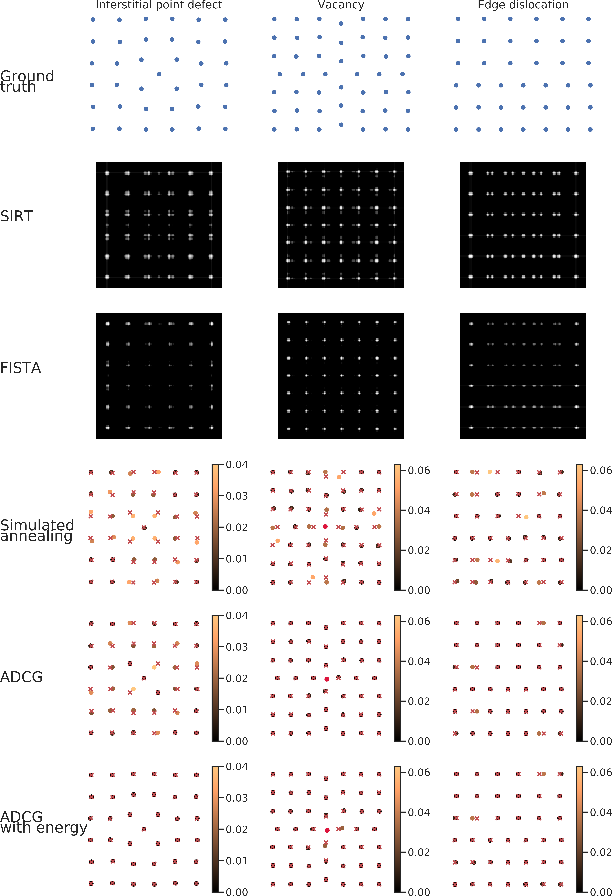

Atomic Super-Resolution Tomography
Poulami Somanya Ganguly1, 2,  , Felix Lucka1, 3, , Hermen Jan Hupkes2, , Joost Batenburg1, 2,
, Felix Lucka1, 3, , Hermen Jan Hupkes2, , Joost Batenburg1, 2,
1 Centrum Wiskunde & Informatica, Amsterdam, The Netherlands; 2 The Mathematical Institute, Leiden University, Leiden, The Netherlands; 3 Centre for Medical Image Computing, University College London, London, United Kingdom
Arxiv preprint - https://arxiv.org/abs/2002.00710
Live poster - https://poulamisganguly.github.io/poster_IS20/

Introduction
Electron tomography is a technique for resolving the interior of nanomaterials from a series of projection images. Discrete tomography approaches have been shown to reconstruct nanocrystals of increasing complexity. A key limitation of these methods is that they assume atoms to lie on a coarse spatial grid whereas, in practice, lattice defects in nanocrystals cause atoms to deviate from regular positions.
We present two alternative grid-free reconstruction approaches: 1) a super-resolution approach that allows for continuous deviations of atom locations, and 2) a deep learning approach to identify atom locations from blurred reconstructions
Summary of Main Results
Allowing for continuous deviations of atom locations aids reconstruction of test lattices with data from very few tilt angles (2 or 3).
Incorporating a physical model for the potential energy of the atomic configuration corrects for poor initialisations.
Learned post processing from reconstructed images performs poorly for limited data.
Mathematical Formulation
An atomic configuration is characterised by a positive measure \(\mu\) on a bounded subset \(X\) of \(\mathbb{R}^d\), which represents the electron density. The Radon transform of the measure, \(\mathcal{R} \mu\), provides a simplified mathematical model of the image formation process. The corresponding inverse problem is to recover \(\mu\) from noisy observations given by \(y = \mathcal{R} \mu + \varepsilon\).
We consider atomic configurations to be sparse measures of the form: \(\mu = \sum_{i=1}^n w_i (G \ast \delta_{\boldsymbol{x}_i})\), where \(G\) denotes a Gaussian that quantifies thermal motion of atoms and the weights \(w_i\) are used to differentiate between atom types.
To recover \(\mu\), we model interatomic interactions explicitly by the Lennard-Jones pair potential and solve the following optimisation problem: \[ \begin{aligned} & \underset{\boldsymbol{x}\in \mathcal{C}, w \in \{0,1\}^n}{\text{minimise}} & & \Big \| \sum_{i=1}^n w_i \mathcal{R}(G \ast \delta_{\boldsymbol{x}_i}) - y \Big \|^2_2 + \alpha V_{\text{tot}}(\boldsymbol{x}), \\ \end{aligned} \] where \(V_{\text{tot}}\) is the total potential energy and \(\alpha\) is a regularisation parameter.
Results
We used a modified version of the alternating descent conditional gradient (ADCG) (Boyd, Schiebinger, and Recht 2017) algorithm to obtain atom locations. At each iteration, the algorithm 1) adds a new atom on a coarse grid and 2) locally moves all atoms. An animated reconstruction run is shown on the right.
Comparison of reconstructions
 Reconstructions of common lattice defects from 2 projections. For simulated annealing, ADCG (\(\alpha=0\)) and ADCG with energy (\(\alpha>0\)) reconstructions, atoms are coloured according to their Euclidean distance from the ground truth. The ground truth positions are marked with red crosses.
Effect of adding energy
 Tuning \(\alpha\) amounts to moving from data-optimal to energy-optimal configurations. Increasing \(\alpha\) beyond an optimal value (grey line in plot) leads to a large increase in the data discrepancy due to addition of more atoms.
Tuning \(\alpha\) amounts to moving from data-optimal to energy-optimal configurations. Increasing \(\alpha\) beyond an optimal value (grey line in plot) leads to a large increase in the data discrepancy due to addition of more atoms.
Learned Post-processing
We trained a deep neural network (Boyd et al. 2018) to identify atom locations from blurred SIRT reconstructions.
This approach although more scalable than ADCG did not perform well for cases where data from only very few angles were available. SIRT reconstructions with identified atoms (red crosses) are shown on the left.
Outlook
Incorporate appropriate features of global optimisation into ADCG
Use more realistic potential energy models
Explore deep learning based iterative schemes
Acknowledgements
This project received funding from the EU’s Horizon 2020 research and innovation programme under the Marie Sklodowska-Curie grant agreement no. 765604.
References
Boyd, Nicholas, Eric Jonas, Hazen Babcock, and Benjamin Recht. 2018. “Deeploco: Fast 3D Localization Microscopy Using Neural Networks.” BioRxiv, 267096.
Boyd, Nicholas, Geoffrey Schiebinger, and Benjamin Recht. 2017. “The Alternating Descent Conditional Gradient Method for Sparse Inverse Problems.” SIAM Journal on Optimization 27 (2): 616–39.